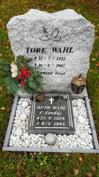
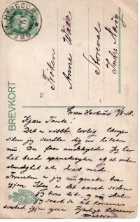

Martin Haldorsen Wahl
M, #301, f. 20 november 1891, d. november 1938
Foreldre
Biografi
Martin Haldorsen Wahl ble født den 20 november 1891 på/i Nærøy, Nord-Trøndelag. Han døde i november 1938 på/i Oslo. Han ble gravlagt den 15 november 1938 på/i Vestre gravlund, Oslo.
Fra et kort (nå falmet) med bilde og påskriften «Utsigten fra mit værelse i Villa Radio" sendt av Martin fra Spitsbergen til hans tante Anne:
Frøken Anne Wahl, Storeval, Indre Nærøy
Green Harbour 19/8/-1918.
Kjære tante!
Det er visst lovlig lenge siden jeg sendte dig en hilsen nu. Du faar undskylde. Jeg har hat baade spanskesyken og al anden elendighet at dras med. Foruten er jeg nu ganske bra igjen. I dag er det aaret siden jeg kom hit., og nu skal jeg snart se at komme av sted igjen ogsaa.
Kjærlige hilsener Martin
Informasjon hentet fra Wikipeida:
Green Harbour var fra omkring 1905 en stasjon for de norske hvalfangstskutene ved Finneset i Grønfjordn på Svalbard. I 1908 ble Svalbards første brevhus åpnet der. Det ble brukt norske frimerker og norske portosatser «idet Green Harbour i postal henseende ansees som en norsk station».
Mens posten til og med 1911 bare leilighetsvis ble sendt mellom Norge og Spitsbergen, kom det i stand fast postforbindelsen mellom Tromsø og Green Harbour i 1912 med motorkutteren M/S «Pelikanen». Frem til 1918 ble også posten tatt med av en rekke hvalfangstskip. Fra 1918 skal dampskipet «May» ha bragt post hver annen uke i seilingssesongen.
Stortinget bevilget i 1911300000 kroner til oppbygging av Spitsbergen Radio, og allerede 22. november 1911 var telegrafstasjonen i Green Harbour operativ for helårsdrift. Telegrafstasjonen var den aller første i arktiske områder. Den etablerte en statlig, norsk etat i denne isfrie fjorden, med radiomaster som utnyttet «sikten» gjennom Grønfjorddalen i sør. Gjennom stasjonen vokste et norsk samfunn opp på Finneset og her etablerte Sysselmannen segde første årene inntil Sysselmannsgården ble bygd i Longyearbyen. Radiostasjonen korresponderende stasjonen på fastlandet var Ingøy radio på Ingøya i Finnmark. Spitsbergen radio dekket hele Ishavet, og dannet knutepunktet for all kommunikasjon mellom Arktis og resten av verden. Etableringen var en viktig forutsetning for at Norge senere kunne bli tilkjent suverenitet over Svalbard.
Da Svarlbardtraktatenble iverksatt 14. august 1925, skiftet Postvesenet navn på alle poststedene på Svalbard. Advent Bay ble omdøpt til Longyearbyen, Kings Bay ble til Ny-Ålesund, og Green Harbour ble til Ankershamn. Den nyansatte sysselmannens kontor ble plassert i «Statens hus» hvor allerede telegrafen og værstasjonen holdt til.
Forsøk på kullgruvedrift fra 1911 ble raskt oppgitt. Det finnes rester av taubanefundamentene.
Den første boringen etter gass på Svalbard ble gjennomført av engelske Nothern Petroleum Syndicate i Green Harbour 1920. Problemet var at de boret på Store Norske Spitsbergen Kullkompanis felt og de måtte forlate stedet.
Stasjonen ble vedtatt nedlagt i 1929, og året etter flyttet både sysselmannen og telegrafstasjonen til Longyearbyen som ble det nye administrative senteret for traktatlandet.
Masten til det opprinnelige anlegget står fortsatt, og er et fredet kulturminne.
Martin Haldorsen Wahl ble døpt den 13 mai 1892 på/i Nærøy, Nord-Trøndelag. Han ble konfirmert den 1 juli 1906 på/i Lundring kirke, Nærøy, Nord-Trøndelag
+. Han var telegrafelev. Han var da bosatt i Thv. Meyers gate 78, hos Frithjof og Selma Ellefsen. Selma var f. 1882 i Nærøy. i 1910 på/i Kristiania. Han var ikke gift.
| Sist redigert |
28 mars 2025 22:18:00 |
| Slektskap | Grandonkel til Håkon Wahl |
Øistein Wahl
M, #302, f. 20 juli 1895, d. 11 mars 1961
Foreldre
Familie 2: Mary Jean Mathers (f. 14 april 1915, d. 29 oktober 1948)
| Datter | Helen Elizabeth Wahl+ |
| Sønn | Edward John Wahl+ |
Biografi
Øistein Wahl ble født den 20 juli 1895 på/i Nærøy, Nord-Trøndelag. Han giftet seg med
Hildur Marie Olsen den 20 juli 1920 på/i Nærøy, Nord-Trøndelag. Han giftet seg med
Mary Jean Mathers i 1942 på/i Canada. Han giftet seg med
Alanna May Hutchinson i 1950 på/i Canada. Han døde den 11 mars 1961 på/i Canada. Han ble gravlagt på/i Fairview Cemetery, Prince Rupert, Skeena-Queen Charlotte, British Columbia, Canada.
Øistein Wahl was also known as Edward Wahl. Han was also known as Ed Wahl. Han ble døpt den 10 november 1895 på/i Lundring kirke, Nærøy, Nord-Trøndelag
+. Han ble konfirmert den 16 juli 1911 på/i Lundring kirke, Nærøy, Nord-Trøndelag
+. Han emigrerte til Everett, Washington, USA, den 23 februar 1915. fra Trondheim via Bergen med "Bergensfjord" og ankom New York 13. mars. Han og
Hildur Marie Olsen boddel Quathiaski, British Columbia, Canada. Han bodde i 1923 på/i Port Essington, British Columbia, Canada, sammen med
Hildur Marie Olsen. Senere bodde de i Dodge Cove; Digby Island, Prince Rupert, Skeena-Queen Charlotte, Britsh Columbia.
British Columbia & Wahl Boatyard
By: Richard Crowder
In this part of this series, we shift to British Columbia to explore the boat building history that served the local and commercial fishing enterprises up and down the west coast. The topography of mountains bordering the ocean meant that fishing boats were built for ocean use, and most pleasure boating, as little as there was at the time, was done in the fishing boats themselves. Because of the remoteness of the settlements, most boat building served a very local market. As the fishing industry waned into the latter part of the twentieth century and pleasure boating increased, the sturdy fishing boats spawned an industry of rebuilding and refurbishing commercial boats for pleasure use. Here we examine one of the largest B.C. wooden fishing boat builders.
Wahl Boatyard
In the early 1900s with the pushing through of the Grand Trunk Pacific Railway from Edmonton to Prince Rupert, the Canadian government promoted land grants and settlements up the coast of British Columbia. Many Scandinavians took advantage of the opportunity and moved their families to Canadas west coast.
Fishing and logging were the staples of the economic engine at the time, and boats were needed for both as well as for transportation between coastal communities. Many of these settlers chose to build their own boats.
In the early 1920s, Ed Wahl moved his family from Norway and settled in Port Essington, a small community on the west coast situated due west of Edmonton and south of Prince Rupert, near the mouth of the Skeena River. The Skeena, almost 600 kilometres long, is the second largest river in BC and even at that time had seven fish canneries along its banks leading inland to Terrace, the logging capital of the region.
Wahl fished and logged on the Skeena River and is reported to have been one of the pioneers in the use of gasoline-powered boats, a development that revolutionized the industry. Using boatbuilding knowledge gleaned from his family roots in Norway, Ed Wahl built his first boat for his own use. He would build one boat in the winter, use it the following season and sell it in the fall. He would build another one the following winter using his newfound knowledge from the previous year to refine the design for better efficiency and seaworthiness.
In a few short years, he moved his family to the Norwegian fishing village of Dodge Cove situated on Digby Island, just a short hop west of Prince Rupert. He started off building a couple of boats per year as his reputation grew, but he became focused on satisfying the growing demands of the canneries as well as local independent fishermen. He was joined over time by his six sons and became well known and respected for his innovation and craftsmanship.
His business survived the depression years, and as World War II progressed there was an overwhelming demand for canned food to be shipped overseas. This brought a boom to the canneries and by extension the boat builders. Japanese boat builders had been the most prominent on the west coast until that time, but when internment happened in 1942 the remaining boat builders, including Ed Wahls business, flourished like never before.
Additional shops were built and knowledgeable employees from the now idle Japanese builders were hired, and a crude form of assembly line fabrication was initiated. In 1944 the Wahl Boatyard built 47 boats, mostly gillnetters, in only ten months!
Following the war the demand for gillnetters dropped as cannery production dropped off, but there was an increasing demand for trollers generated by the increasing number of independent fishermen whose ranks were increasing as work under the canneries dropped off. With increases in available diesel horsepower, trollers were made longer and beamier and could incorporate a smoother and more rounded design. The added space allowed for more amenities like galleys and sleeping accommodations to match the demands of independent fishermen. These design upgrades during the 1950s live on in the refurbished pleasure trawlers seen up and down the coast to this day.
In 1959, seeing the need for the rebuilding and repairs of wooden vessels, Ed Wahl constructed a state-of-the-art facility at Prince Rupert and put his eldest son Henry in charge. Ed was mostly retired at this point but soon contracted cancer and died in 1961. His six experienced sons carried on, and their two yards flourished. But as the sixties turned into the seventies and new boat building materials like aluminum, steel, and fibreglass revolutionized the building process, the traditional wood building business dropped off.
Following the death of two of the sons in quick succession the Dodge Cove shops were shut down, and in 1976 the Prince Rupert facility was sold, thus marking the end of the remarkable Wahl family boat building heritage. For some sixty years Wahl Boatyards were recognized as the most prolific in the Pacific Northwest, building an estimated eleven hundred or more vessels! Truly remarkable for a nineteen-year-old Norwegian who originally came to Canada with a reported $25 to his name.
For over fifty years now, Commodores Boats of Richmond, BC, a large repair and rebuilding facility on the Fraser River south of Vancouver has, as one small part of its business, been converting Wahl trollers into pleasure yachts. Commodores Boats have been chosen here, out of the dozens of rebuilders and repair facilities on the coast, to wrap up this segment on Wahl boats simply because the father of its owner and founder, Bo Spiller, worked for Wahl and ended up a buyer of the Wahl facility and Bo Spiller helped out his father there.
| Sist redigert |
15 juni 2026 10:24:44 |
| Slektskap | Grandonkel til Håkon Wahl |
Ragna Wahl
K, #303, f. 16 november 1898, d. 2 oktober 1965
Foreldre
Biografi
Ragna Wahl ble født den 16 november 1898 på/i Nærøy, Nord-Trøndelag. Hun døde den 2 oktober 1965 på/i Nærøy, Nord-Trøndelag. Hun ble gravlagt den 9 oktober 1965 på/i Lundring kirkegård, Nærøy, Nord-Trøndelag.
Ragna Wahl ble døpt den 25 juni 1899 på/i Nærøy, Nord-Trøndelag. Hun ble konfirmert den 11 juli 1915 på/i Lundring kirke, Nærøy, Nord-Trøndelag
+.
| Sist redigert |
14 april 2025 21:32:59 |
| Slektskap | Grandtante til Håkon Wahl |
Olav Wahl
M, #304, f. 18 desember 1900, d. 18 desember 1972
Foreldre
Biografi
Olav Wahl ble født den 18 desember 1900 på/i Nærøy, Nord-Trøndelag. Han giftet seg med
Ingrid Olufsdatter Aune den 27 februar 1922 på/i Kolvereid kirke, Nærøy, Nord-Trøndelag. Han døde den 18 desember 1972 på/i Nærøy, Nord-Trøndelag. Han ble gravlagt den 22 desember 1972 på/i Lundring kirkegård, Nærøy, Nord-Trøndelag.
Olav Wahl ble døpt den 9 juni 1901. Han ble konfirmert den 25 juni 1916 på/i Lundring kirke, Nærøy, Nord-Trøndelag
+. Han var utdannet ved ved Lilleval jordbruksskoles første halvårskurs. Han kjøpte i 1921 Val store 26/9 og 15, Storval, Nærøy, Nord-Trøndelag. Han har hatt flere kommunale tillitsverv, bl.a. medlem av formannskapet Nærøy, Nord-Trøndelag.
| Sist redigert |
20 august 2024 16:03:08 |
| Slektskap | Grandonkel til Håkon Wahl |
Ingrid Olufsdatter Aune
K, #305, f. 3 februar 1893, d. 9 august 1985
Foreldre
Familie: Olav Wahl (f. 18 desember 1900, d. 18 desember 1972)
| Sønn | Tore Wahl+ (f. 22 juli 1922, d. 16 juni 2007) |
| Sønn | Arne Wahl+ (f. 21 januar 1924, d. 6 november 2010) |
| Sønn | Knut Wahl+ (f. 3 mai 1925, d. 15 november 2014) |
| Datter | Margit Wahl+ (f. 10 august 1930, d. 16 januar 2020) |
| Sønn | Ola Wahl+ |
Biografi
Ingrid Olufsdatter Aune ble født den 3 februar 1893 på/i Mulstadaunet 30/4;7;10 og 11, Mulstad; Kolvereid, Nærøy, Nord-Trøndelag. Hun giftet seg med
Olav Wahl den 27 februar 1922 på/i Kolvereid kirke, Nærøy, Nord-Trøndelag. Hun døde den 9 august 1985 på/i Nærøy, Nord-Trøndelag.
Ingrid Olufsdatter Aune was also known as Ingrid Wahl. Hun ble døpt den 28 april 1893 på/i Kolvereid kirke, Nærøy, Nord-Trøndelag. Hun ble konfirmert den 12 juli 1908 på/i Kolvereid kirke, Nærøy, Nord-Trøndelag.
| Sist redigert |
7 januar 2016 00:00:00 |
| Slektskap | 3-menning 2 ganger forskjøvet til Håkon Wahl |
Tore Wahl
M, #306, f. 22 juli 1922, d. 16 juni 2007
Foreldre
| Sønn | Gunnar Wahl+ |
| Sønn | Willy Wahl+ |

Tore Wahl - gravstein
Biografi
Tore Wahl ble født den 22 juli 1922 på/i Storval, Nærøy, Nord-Trøndelag. Han giftet seg med
Ruth Kristmar Eugenie Sandøy. Han giftet seg med Ragnhild Astrid Myhre. Han og Ragnhild Astrid Myhre ble skilt. Han døde av av kreft den 16 juni 2007 på/i Eikebo; Eik bo og behandlingssenter, Tønsberg, Vestfold. He ble gravlagt on 21 June 2007fra in Solvangkirken, Tønsberg, Vestfold.
Tore Wahl ble døpt den 22 oktober 1922 på/i Lundring kirke, Nærøy, Nord-Trøndelag
+. Han kjøpte i 1953 Varøystrand 25/22, Varøya, Nærøy, Nord-Trøndelag, for 14.000 kroner. Han bygde seg hus på Rørvik. Han flyttet til Vestby, Akershus, i 1968. Tore var fosterfar til Tone.
| Sist redigert |
15 oktober 2023 00:42:44 |
| Slektskap | Søskenbarn 1 gang forskjøvet til Håkon Wahl |
Arne Wahl
M, #307, f. 21 januar 1924, d. 6 november 2010
Foreldre
Familie: Magnhild Aris Andersen
| Sønn | Rune Oddvar Wahl+ |
| Datter | Randi Annie Wahl+ |
| Datter | Ranveig Elisabet Wahl+ |
| Sønn | Olav Wahl+ |
Biografi
Arne Wahl ble født den 21 januar 1924 på/i Storeval, Nærøy, Nord-Trøndelag. Han giftet seg med Magnhild Aris Andersen. Han døde den 6 november 2010 på/i Nærøy bo- og behandlingssenter, Kolvereid, Nærøy, Nord-Trøndelag. Han ble gravlagt den 12 november 2010 på/i Lundring kirkegård, Nærøy, Nord-Trøndelag.
Arne Wahl ble døpt den 27 februar 1924 på/i Kolvereid kirke, Nærøy, Nord-Trøndelag. Han kjøpte Val store 26/9 og 15, Storval, Nærøy, Nord-Trøndelag. Han kjøpte den 13 august 1979 Vassdalen 26/24, Storval, Nærøy, Nord-Trøndelag, av Aud Mauset for 40.000 kroner.
| Sist redigert |
4 august 2022 21:58:13 |
| Slektskap | Søskenbarn 1 gang forskjøvet til Håkon Wahl |
Knut Wahl
M, #308, f. 3 mai 1925, d. 15 november 2014
Foreldre
Familie: Unni Torbjørg Kvale
| Datter | Turid Helene Wahl |
| Datter | Inger Marie Wahl+ |
| Sønn | Vidar Wahl |
Biografi
Knut Wahl ble født den 3 mai 1925 på/i Nærøy, Nord-Trøndelag. Han giftet seg med Unni Torbjørg Kvale den 29 desember 1956 på/i Nærøy, Nord-Trøndelag. Han døde den 15 november 2014 på/i Horten, Vestfold.
Knut Wahl ble døpt den 6 september 1925 på/i Lundring kirke, Nærøy, Nord-Trøndelag
+. Han var utdannet ved sosialskolen i Oslo. Han bodde omtrent 1969 på/i Horten, Vestfold.
| Sist redigert |
24 september 2022 07:54:41 |
| Slektskap | Søskenbarn 1 gang forskjøvet til Håkon Wahl |
Anna Kathrine Olsdatter Haugfles
K, #310, f. 20 september 1868, d. 16 desember 1936
Foreldre
Biografi
Anna Kathrine Olsdatter Haugfles ble født den 20 september 1868 på/i Hofles; Kolvereid, Nærøy, Nord-Trøndelag. Hun giftet seg med
Haldor Ingvanel Melum Iversen Wahl den 23 oktober 1903 på/i Kolvereid kirke, Nærøy, Nord-Trøndelag. Hun døde den 16 desember 1936 på/i Nærøy, Nord-Trøndelag. Hun ble gravlagt den 22 desember 1936 på/i Lundring kirkegård, Nærøy, Nord-Trøndelag.
Anna Kathrine Olsdatter Haugfles was also known as Monsen Wahl. Hun ble døpt den 24 januar 1869 på/i Kolvereid kirke, Nærøy, Nord-Trøndelag. Hun ble konfirmert den 8 juni 1884 på/i Kolvereid kirke, Nærøy, Nord-Trøndelag.
| Sist redigert |
18 februar 2026 21:17:35 |
Ole Melum Wahl
M, #311, f. 28 mai 1912, d. 30 mars 1958
Foreldre
Biografi
Ole Melum Wahl ble født den 28 mai 1912 på/i Storval, Nærøy, Nord-Trøndelag. Han giftet seg med
Edith Eline Barø i 1943. Han døde den 30 mars 1958 på/i Storval, Nærøy, Nord-Trøndelag. Han ble gravlagt den 9 april 1958 på/i Lundring kirkegård, Nærøy, Nord-Trøndelag.
Ole Melum Wahl ble døpt den 17 august 1912 på/i Kolvereid kirke, Nærøy, Nord-Trøndelag. Han ble konfirmert den 17 juli 1927 på/i Lundring kirke, Nærøy, Nord-Trøndelag
+. Han kjøpte i 1938 Berg 26/5, Storval, Nærøy, Nord-Trøndelag, på auksjon.
| Sist redigert |
4 august 2022 16:01:43 |
| Slektskap | Grandonkel til Håkon Wahl |
Edith Eline Barø
K, #312, f. 25 desember 1917, d. 11 juni 2002
Foreldre
Biografi
Edith Eline Barø ble født den 25 desember 1917 på/i Vikna, Nord-Trøndelag. Hun giftet seg med
Ole Melum Wahl i 1943. Hun døde den 11 juni 2002 på/i Nærøy, Nord-Trøndelag. Hun ble gravlagt den 19 juni 2002 på/i Lundring kirkegård, Nærøy, Nord-Trøndelag.
Edith Eline Barø was also known as Edith Eline Barø Wahl. Hun ble døpt den 28 april 1918 på/i Vikna, Nord-Trøndelag.
| Sist redigert |
1 november 2019 00:00:00 |
| Slektskap | 6-menning 1 gang forskjøvet til Håkon Wahl |
Johan Daniel Andreassen
M, #313, f. 30 januar 1842, d. 3 april 1883
Foreldre
Biografi
Johan Daniel Andreassen ble født den 30 januar 1842 på/i Laugsjøen, Nærøy, Nord-Trøndelag. Han giftet seg med
Martha Lovise Olsdatter Juul den 7 juli 1864 på/i Nærøy, Nord-Trøndelag. Han døde den 3 april 1883 på/i Storeval, Nærøy, Nord-Trøndelag. Han ble gravlagt den 15 april 1883 på/i Lundring kirkegård, Nærøy, Nord-Trøndelag.
Johan Daniel Andreassen ble døpt den 1 mai 1842 på/i Nærøy, Nord-Trøndelag. Han ble konfirmert den 12 juli 1857 på/i Nærøy, Nord-Trøndelag.
| Sist redigert |
7 januar 2016 00:00:00 |
| Slektskap | Tippoldefar til Håkon Wahl |
Martha Lovise Olsdatter Juul
K, #314, f. 14 mai 1836, d. 3 februar 1906
Foreldre
Biografi
Martha Lovise Olsdatter Juul ble født den 14 mai 1836 på/i Storeval, Nærøy, Nord-Trøndelag. Hun giftet seg med
Johan Daniel Andreassen den 7 juli 1864 på/i Nærøy, Nord-Trøndelag. Hun døde den 3 februar 1906 på/i Nærøy, Nord-Trøndelag. Hun ble gravlagt den 18 februar 1906 på/i Nærøy, Nord-Trøndelag.
Martha Lovise Olsdatter Juul ble døpt den 3 juli 1836 på/i Nærøy, Nord-Trøndelag. Hun ble konfirmert den 11 juli 1852 på/i Nærøy, Nord-Trøndelag. Hun ble jordfestet den 17 juni 1906 Nærøy, Nord-Trøndelag.
| Sist redigert |
7 januar 2016 00:00:00 |
| Slektskap | Tippoldemor til Håkon Wahl |
Ole Johansen Juul
M, #315, f. 1808, d. 8 oktober 1838
Foreldre
Biografi
Ole Johansen Juul ble født i 1808 på/i Ramstad, Nærøy, Nord-Trøndelag. Han giftet seg med
Anne Margrethe Andersdatter den 5 november 1835. Han døde den 8 oktober 1838 på/i Nærøy, Nord-Trøndelag. Ole og drengen, Jacob Jensen Strandval, omkom på sjøen mellom Tviberg og Nærøya. Han ble gravlagt den 14 oktober 1838 på/i Nærøy, Nord-Trøndelag.
Ole Johansen Juul ble døpt den 23 oktober 1808 på/i Nærøy, Nord-Trøndelag.
| Sist redigert |
14 juli 2022 23:47:52 |
| Slektskap | 2. tippoldefar til Håkon Wahl |
Iver Andreas Mikkelsen
M, #316, f. 12 mai 1829, d. 6 februar 1909
Foreldre
Biografi
Iver Andreas Mikkelsen ble født den 12 mai 1829 på/i Storval (I), Nærøy, Nord-Trøndelag. Han giftet seg med
Margrete Katrine Haldorsdatter Strand den 28 oktober 1852 på/i Kolvereid, Nærøy, Nord-Trøndelag. Han giftet seg med
Siri-Anna Haldorsdatter Strand den 20 oktober 1854 på/i Kolvereid, Nærøy, Nord-Trøndelag. Han døde den 6 februar 1909 på/i Storval, Nærøy, Nord-Trøndelag. Han ble gravlagt den 14 februar 1909 på/i Nærøy, Nord-Trøndelag.
Iver Andreas Mikkelsen ble døpt den 7 juli 1829 på/i Nærøy, Nord-Trøndelag. Han ble konfirmert den 3 august 1845 på/i Nærøy, Nord-Trøndelag. Han ble jordfestet den 13 oktober 1909 Nærøy, Nord-Trøndelag.
| Sist redigert |
25 november 2020 00:00:00 |
| Slektskap | Tippoldefar til Håkon Wahl |
Siri-Anna Haldorsdatter Strand
K, #317, f. 6 oktober 1829, d. 8 november 1908
Foreldre
Biografi
Siri-Anna Haldorsdatter Strand ble født den 6 oktober 1829 på/i Strand, Nærøy, Nord-Trøndelag. Hun giftet seg med
Iver Andreas Mikkelsen den 20 oktober 1854 på/i Kolvereid, Nærøy, Nord-Trøndelag. Hun døde den 8 november 1908 på/i Storeval, Nærøy, Nord-Trøndelag. Hun ble gravlagt den 22 november 1908 på/i Lundring kirkegård, Nærøy, Nord-Trøndelag.
Siri-Anna Haldorsdatter Strand ble døpt den 26 desember 1829 på/i Kolvereid, Nærøy, Nord-Trøndelag. Hun ble konfirmert den 30 juli 1844 på/i Kolvereid, Nærøy, Nord-Trøndelag.
| Sist redigert |
3 mai 2019 00:00:00 |
| Slektskap | Tippoldemor til Håkon Wahl |
Margrete Katrine Iversdatter Storval
K, #318, f. 18 august 1854, d. 29 november 1940
Foreldre
Biografi
Margrete Katrine Iversdatter Storval ble født u.e. den 18 august 1854 på/i Nærøy, Nord-Trøndelag. Hun giftet seg med
Andreas Lorentssen den 12 november 1886 på/i Nærøy, Nord-Trøndelag.

Hun døde den 29 november 1940 på/i Nærøy, Nord-Trøndelag. Hun ble gravlagt den 10 desember 1940 på/i Steine kirkegård, Nærøy, Nord-Trøndelag.
Margrete Katrine Iversdatter Storval was also known as Margrete Katrine Østvik. Hun ble døpt den 5 november 1854 på/i Nærøy, Nord-Trøndelag. Hun ble konfirmert den 3 juli 1870 på/i Lundring kirke, Nærøy, Nord-Trøndelag
+.
| Sist redigert |
29 desember 2025 21:12:52 |
| Slektskap | Søster av oldefar/mor til Håkon Wahl |
Andreas Lorentssen
M, #319, f. 21 september 1855, d. 8 juni 1934
Foreldre
Biografi
Andreas Lorentssen ble født den 21 september 1855 på/i Overhalla, Nord-Trøndelag. Han giftet seg med
Margrete Katrine Iversdatter Storval den 12 november 1886 på/i Nærøy, Nord-Trøndelag.
Han døde den 8 juni 1934 på/i Østvik 27/2, Lauga, Nærøy, Nord-Trøndelag.
Andreas Lorentssen was also known as Andreas Østvik. Han ble døpt den 30 desember 1855 på/i Skage kirke, Overhalla, Nord-Trøndelag. Han ble konfirmert den 2 juli 1871 på/i Lundring kirke, Nærøy, Nord-Trøndelag
+. Han innvandret til USA den 27 april 1881.
| Sist redigert |
20 august 2022 20:28:43 |
Mikal Iversen Storval
M, #320, f. 13 august 1857, d. 14 august 1857
Foreldre
Biografi
Mikal Iversen Storval ble født den 13 august 1857 på/i Nærøy, Nord-Trøndelag. Han døde den 14 august 1857 på/i Nærøy, Nord-Trøndelag.
| Sist redigert |
3 mai 2010 00:00:00 |
| Slektskap | Bror av oldefar/mor til Håkon Wahl |
Mikal Iversen Wahl
M, #321, f. 30 oktober 1858, d. 13 januar 1946
Foreldre
Biografi
Mikal Iversen Wahl ble født den 30 oktober 1858 på/i Nærøy, Nord-Trøndelag. Han giftet seg med
Hanna Margrethe Hansdatter den 18 november 1885 på/i Kolvereid, Nærøy, Nord-Trøndelag.
Han døde den 13 januar 1946 på/i Nærøy, Nord-Trøndelag. Han ble gravlagt den 21 januar 1948 på/i Steine gravsted, Nærøy, Nord-Trøndelag.
Mikal Iversen Wahl ble døpt den 6 februar 1859 på/i Nærøy, Nord-Trøndelag. Han ble konfirmert den 9 juli 1876 på/i Lundring kirke, Nærøy, Nord-Trøndelag
+. Han brukte Finne vestre 24/3, Finne; Kolvereid, Nærøy, Nord-Trøndelag. Han kjøpte i 1898 Valmoen 26/9 og 15, Storval, Nærøy, Nord-Trøndelag.
| Sist redigert |
17 august 2024 21:35:41 |
| Slektskap | Bror av oldefar/mor til Håkon Wahl |
Odd Fossan
M, #322, f. 17 september 1917, d. 17 oktober 2004
Biografi
Odd Fossan ble født den 17 september 1917 på/i Sparbu, Steinkjer, Nord-Trøndelag. Han giftet seg med
Oddrun Vibe. Han døde den 17 oktober 2004 på/i Steinkjer, Nord-Trøndelag. Han ble gravlagt den 22 oktober 2004 på/i Mære kirkegård, Steinkjer, Nord-Trøndelag.
| Sist redigert |
30 januar 2011 00:00:00 |
Anne Kjerstine Iversdatter Wahl
K, #323, f. 25 april 1865, d. 9 juni 1932
Foreldre

Martin - Anne Wahl - postkort (2)
Biografi
Anne Kjerstine Iversdatter Wahl ble født den 25 april 1865 på/i Storval, Nærøy, Nord-Trøndelag. Hun døde den 9 juni 1932 på/i Storval, Nærøy, Nord-Trøndelag. Hun ble gravlagt den 17 juni 1932 på/i Steine gravsted, Nærøy, Nord-Trøndelag.
Fra et kort (nå falmet) med bilde og påskriften «Utsigten fra mit værelse i Villa Radio" sendt av Martin fra Spitsbergen til hans tante Anne:
Frøken Anne Wahl, Storeval, Indre Nærøy
Green Harbour 19/8/-1918.
Kjære tante!
Det er visst lovlig lenge siden jeg sendte dig en hilsen nu. Du faar undskylde. Jeg har hat baade spanskesyken og al anden elendighet at dras med. Foruten er jeg nu ganske bra igjen. I dag er det aaret siden jeg kom hit., og nu skal jeg snart se at komme av sted igjen ogsaa.
Kjærlige hilsener Morten
Informasjon hentet fra Wikipeida:
Green Harbour var fra omkring 1905 en stasjon for de norske hvalfangstskutene ved Finneset i Grønfjordn på Svalbard. I 1908 ble Svalbards første brevhus åpnet der. Det ble brukt norske frimerker og norske portosatser «idet Green Harbour i postal henseende ansees som en norsk station».
Mens posten til og med 1911 bare leilighetsvis ble sendt mellom Norge og Spitsbergen, kom det i stand fast postforbindelsen mellom Tromsø og Green Harbour i 1912 med motorkutteren M/S «Pelikanen». Frem til 1918 ble også posten tatt med av en rekke hvalfangstskip. Fra 1918 skal dampskipet «May» ha bragt post hver annen uke i seilingssesongen.
Stortinget bevilget i 1911300000 kroner til oppbygging av Spitsbergen Radio, og allerede 22. november 1911 var telegrafstasjonen i Green Harbour operativ for helårsdrift. Telegrafstasjonen var den aller første i arktiske områder. Den etablerte en statlig, norsk etat i denne isfrie fjorden, med radiomaster som utnyttet «sikten» gjennom Grønfjorddalen i sør. Gjennom stasjonen vokste et norsk samfunn opp på Finneset og her etablerte Sysselmannen segde første årene inntil Sysselmannsgården ble bygd i Longyearbyen. Radiostasjonen korresponderende stasjonen på fastlandet var Ingøy radio på Ingøya i Finnmark. Spitsbergen radio dekket hele Ishavet, og dannet knutepunktet for all kommunikasjon mellom Arktis og resten av verden. Etableringen var en viktig forutsetning for at Norge senere kunne bli tilkjent suverenitet over Svalbard.
Da Svarlbardtraktatenble iverksatt 14. august 1925, skiftet Postvesenet navn på alle poststedene på Svalbard. Advent Bay ble omdøpt til Longyearbyen, Kings Bay ble til Ny-Ålesund, og Green Harbour ble til Ankershamn. Den nyansatte sysselmannens kontor ble plassert i «Statens hus» hvor allerede telegrafen og værstasjonen holdt til.
Forsøk på kullgruvedrift fra 1911 ble raskt oppgitt. Det finnes rester av taubanefundamentene.
Den første boringen etter gass på Svalbard ble gjennomført av engelske Nothern Petroleum Syndicate i Green Harbour 1920. Problemet var at de boret på Store Norske Spitsbergen Kullkompanis felt og de måtte forlate stedet.
Stasjonen ble vedtatt nedlagt i 1929, og året etter flyttet både sysselmannen og telegrafstasjonen til Longyearbyen som ble det nye administrative senteret for traktatlandet.
Masten til det opprinnelige anlegget står fortsatt, og er et fredet kulturminne.
Anne Kjerstine Iversdatter Wahl ble døpt den 4 juni 1865 på/i Nærøy, Nord-Trøndelag. Hun ble konfirmert den 24 juli 1881 på/i Lundring kirke, Nærøy, Nord-Trøndelag
+. Anne hadde tatt bilde av hjemgården og fått laget postkort.
| Sist redigert |
13 mai 2026 15:56:00 |
| Slektskap | Søster av oldefar/mor til Håkon Wahl |
Jonette Kristine Haldorsdatter Strand
K, #324, f. 8 desember 1831, d. 2 april 1917
Foreldre
Biografi
Jonette Kristine Haldorsdatter Strand ble født den 8 desember 1831 på/i Kolvereid, Nærøy, Nord-Trøndelag. Hun giftet seg med
Johan Andreas Pedersen den 5 november 1858 på/i Kolvereid, Nærøy, Nord-Trøndelag. Hun døde den 2 april 1917 på/i Lauga, Nærøy, Nord-Trøndelag.
Jonette Kristine Haldorsdatter Strand ble døpt den 22 april 1832 på/i Kolvereid, Nærøy, Nord-Trøndelag. Hun ble konfirmert den 11 juli 1847 på/i Kolvereid, Nærøy, Nord-Trøndelag.
| Sist redigert |
20 januar 2016 00:00:00 |
| Slektskap | Søster av tippoldefar/mor til Håkon Wahl |
Martin Carolius Iversen
M, #325, f. 8 april 1853, d. 28 august 1853
Foreldre
Biografi
Martin Carolius Iversen ble født den 8 april 1853 på/i Nærøy, Nord-Trøndelag. Han døde den 28 august 1853 på/i Storval, Nærøy, Nord-Trøndelag. Han ble gravlagt den 4 september 1853 på/i Nærøy, Nord-Trøndelag.
Martin Carolius Iversen ble døpt den 15 mai 1853 på/i Nærøy, Nord-Trøndelag.
| Sist redigert |
12 januar 2016 00:00:00 |
| Slektskap | Bror av oldefar/mor til Håkon Wahl |
{kind=link}
{kind=link}
{kind=link}